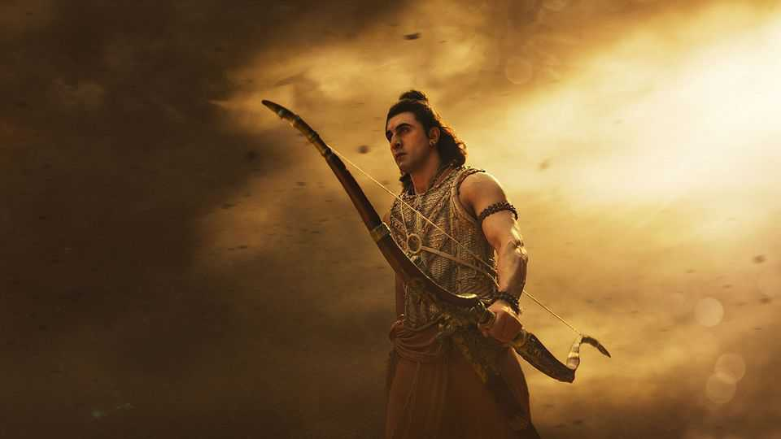

“Ramayana”, India’s biggest film, turns a Hindu god into a star
But it won’t become the global phenomenon many hope

Nov 12th 2026
No spoiler alerts are required. Every Indian knows the story of the “Ramayana”, an epic poem that dates back some 3,000 years. Ram, a Hindu god-king, battles Ravana, a demon. Good triumphs over evil, and cosmic order is restored.
The tale has been retold many times. But “Ramayana: Rise of a Legend”, which opened on November 5th, is the splashiest version yet. (It is the first instalment in a two-part adaptation; the second will be released around Diwali in 2028.) With a budget of $430m, the duo are the most expensive films in Indian history. This is also the first adaptation with explicitly global ambitions. The producers have announced plans for a Marvel-style cinematic universe featuring spin-offs, video games, merchandise and theme parks.
To help export the story, the film-makers have brought in Western talent. The soaring score was co-written by Hans Zimmer, an Oscar-winning composer known for “Gladiator” and “Pirates of the Caribbean”. DNEG, a visual-effects firm responsible for some of the spectacular imagery in “Dune” and “The Odyssey”, helped realise the mythological world. But can “Ramayana” follow “The Odyssey” in mastering the global box office?
The investment has paid some divine dividends. “Ramayana” is a sumptuous visual feast, perhaps the most impressive Indian cinema has served up. Ravana delivers a knock-out blow to a flying elephant; a demi-god vulture attacks a flying chariot. There are plenty of heroic slow-mo shots that are a staple of Indian cinema.
“Ramayana” has gone down well in India, where it is ruling the box office. Audiences have rated the movie 9.3 out of ten on BookMyShow, India’s biggest ticketing platform. Yet audiences abroad may not be as mesmerised. In focusing on spectacle, Nitesh Tiwari, the director, has neglected some fundamental elements of cinematic craft such as story and character development. Figures appear suddenly, then vanish. The dialogue is stilted and clumsy. The plot jumps from episode to episode as it ticks off the best-known bits.
Dramatising Ram is not straightforward. He is venerated for embodying dharma (righteousness): he is the ideal son, husband, brother and king-in-waiting. But flawless men rarely make for compelling heroes (and Ranbir Kapoor’s listless portrayal of Ram does little to help). The creators of “The Chosen”, which dramatises the life of Jesus Christ, faced a similar issue. But they took more creative liberties to humanise their sacred subject, and the show has been enjoyed by 300m people.
In an epic battle between good and evil, virtue alone is not enough. In “Ramayana” Ravana, the demon, emerges as flamboyant and charismatic—so much so that some have accused the film-makers of glorifying the villain (much as John Milton’s readers accused him of being too sympathetic to Satan in “Paradise Lost”).
To be fair, it is not an easy story to take on. The last big cinematic adaptation, “Adipurush” (2023), provoked fury in India over its characterisation, slang and cartoonish visual effects. Politicians and religious groups demanded a ban, and public-interest lawsuits sought to prevent its distribution in cinemas and on streaming platforms. The film-makers were forced to make edits after its release.
This “Ramayana” tries to avoid controversy by being a largely faithful retelling of a divine story for the faithful. But the choices made to ensure it succeeds in India are what will stop it from being a global hit. Ram, it turns out, can conquer Ravana, but not a bad script. ■